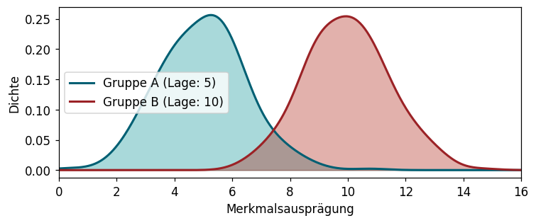
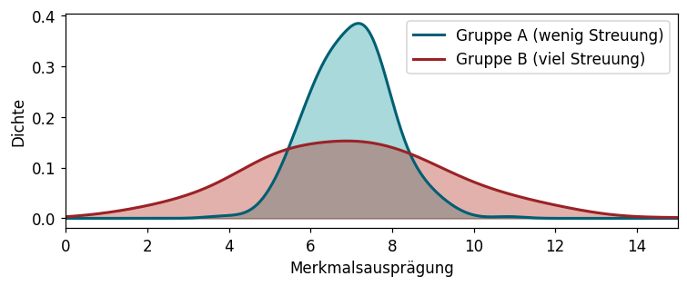
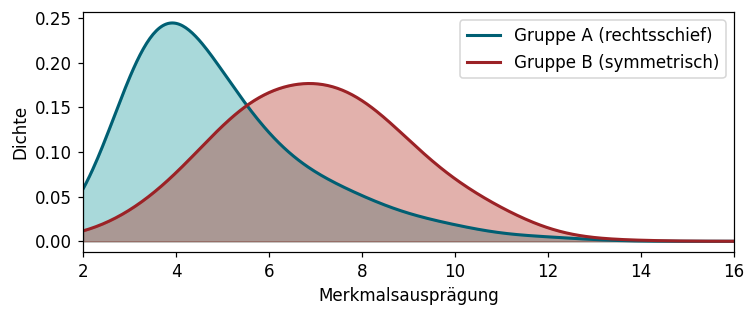
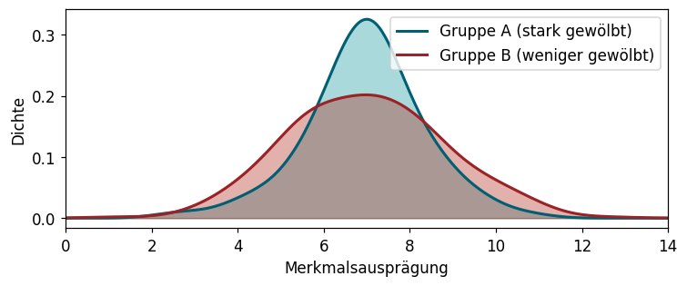
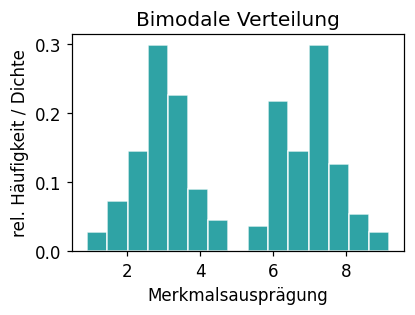
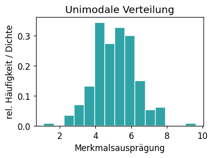
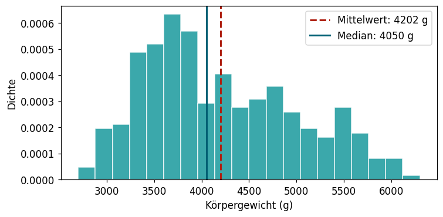
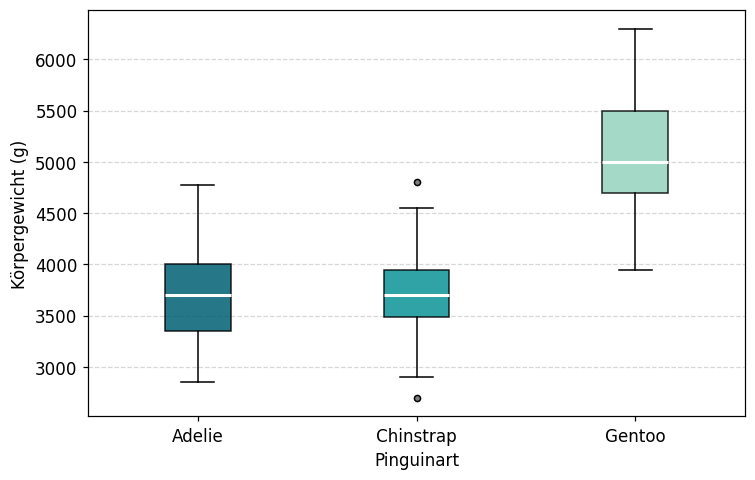

1.4 Kennzahlen: Lage
Lernziele
Am Ende dieses Unterkapitels kannst du:
- erklären, was eine Kennzahl ist und wozu sie genutzt wird.
- Modalwert, arithmetisches Mittel, geometrisches Mittel und Median berechnen und interpretieren.
- für einen gegebenen Datensatz das passende Lagemaß auswählen.
- p-Quantile und Quartile berechnen.
- einen Boxplot ablesen und mit Python erstellen.
Einführung
Wir haben eine Stichprobe (x_1, x_2, \dots, x_n) vorliegen. Häufigkeitstabellen und Grafiken zeigen uns ein vollständiges Bild der Daten – aber manchmal möchten wir die Stichprobe auf einen einzigen charakteristischen Wert reduzieren. Solche Werte nennt man Kennzahlen (oder Maßzahlen).
Eine Häufigkeitsverteilung lässt sich durch vier wichtige Eigenschaften beschreiben:
Die Lage beschreibt, wo die Mitte oder der Schwerpunkt der Daten liegt.
Kennzahlen für die Lage sind z.B. Modalwert, Mittelwert und Median – sie stehen im Mittelpunkt dieses Kapitels.
Die Streuung beschreibt, wie stark die Werte auseinander liegen.

Kennzahlen für die Streuung – Varianz, Standardabweichung u.a. – werden in Kapitel 1.5 behandelt.
Die Schiefe beschreibt, ob die Verteilung symmetrisch ist oder ob die Werte auf einer Seite weiter streuen.

Kennzahlen für die Schiefe werden ebenfalls in Kapitel 1.5 behandelt.
Die Wölbung beschreibt, ob die Werte gleichmäßig verteilt sind oder ob sich die meisten Werte eng um die Mitte häufen (mit einzelnen weit entfernten Ausreißern).

Auch Kennzahlen für die Wölbung kommen in Kapitel 1.5.
Wir beginnen in diesem Kapitel mit den Lagemaßen: Sie beschreiben, wo sich die Mitte einer Stichprobe befindet.
TippWelches Lagemaß für welchen Merkmalstyp?
| Lagemaß | Skalenniveau | Besonderheit |
|---|---|---|
| Modalwert | ab nominal | immer anwendbar |
| Median | ab ordinal | robust gegenüber Ausreißern |
| Arithmetisches Mittel | kardinal | empfindlich gegenüber Ausreißern |
| Geometrisches Mittel | kardinal (nur >0) | für Wachstumsraten geeignet |
Modalwert
Der Modalwert (oder Modus) ist die Merkmalsausprägung, die am häufigsten in der Stichprobe vorkommt.
Definition 1 (Modalwert)
Sei (x_1, \dots, x_n) eine Stichprobe. Der Modalwert x_\text{mod} ist die Merkmalsausprägung mit der größten absoluten Häufigkeit.
Formal: x_\text{mod} ist dasjenige a_j, für das H(a_j) maximal ist.
VorsichtBesonderheiten des Modalwerts
- Eine Stichprobe kann mehrere Modalwerte haben, wenn mehrere Ausprägungen gleich oft vorkommen.
- Bei stetigen Merkmalen, bei denen jeder Wert genau einmal vorkommt, ist der Modalwert wenig sinnvoll. Besser: Modalklasse (Klasse mit der höchsten Häufigkeitsdichte).
Beispiel 1 (Blutgruppe und Körpergröße)
In einer Umfrage wurden 12 Personen nach Blutgruppe und Körpergröße befragt:
| ID | 1 | 2 | 3 | 4 | 5 | 6 | 7 | 8 | 9 | 10 | 11 | 12 |
|---|---|---|---|---|---|---|---|---|---|---|---|---|
| Blutgruppe | A | A | B | AB | 0 | 0 | A | 0 | B | A | 0 | A |
| Größe (cm) | 170,5 | 183,0 | 174,5 | 158,0 | 167,5 | 179,5 | 192,0 | 177,5 | 186,5 | 161,5 | 181,0 | 164,0 |
Die Blutgruppe A kommt 5-mal vor – sie ist der Modalwert.
Für die Körpergröße (stetig) macht der Modalwert wenig Sinn – jede Größe kommt genau einmal vor. Stattdessen: Modalklasse bei Klassierung in 10-cm-Intervalle → (170, 180] hat die meisten Beobachtungen (4 von 12).
Unimodale und bimodale Verteilungen
Eine Verteilung mit genau einem lokalen Maximum heißt unimodal, eine mit zwei lokalen Maxima heißt bimodal.


Aufgabe 1 (Pinguine: Modalwert)
Bestimme mit Python den Modalwert der Variablen species im Pinguin-Datensatz. Welche Pinguinart kommt am häufigsten vor?
Python: Modalwert berechnen
# Für kategoriale Merkmale – liefert alle Modi (kann mehrere geben)
df['spalte'].mode()
# Häufigste Ausprägung direkt
df['spalte'].value_counts().index[0]Arithmetisches Mittel
Das arithmetische Mittel ist das bekannteste Lagemaß. Im Alltag wird es oft einfach „Durchschnitt” oder „Mittelwert” genannt.
Definition 2 (Arithmetisches Mittel)
Sei (x_1, \dots, x_n) eine Stichprobe eines kardinal skalierten Merkmals. Das arithmetische Mittel ist:
\bar{x} = \dfrac{1}{n} \sum_{i=1}^{n} x_i = \dfrac{x_1 + x_2 + \cdots + x_n}{n}
Beispiel 2 (Fortsetzung: Körpergröße bei 12 Personen)
Die Körpergrößen lauten: 170,5 – 183,0 – 174,5 – 158,0 – 167,5 – 179,5 – 192,0 – 177,5 – 186,5 – 161,5 – 181,0 – 164,0
\bar{x} = \dfrac{1}{12} (170{,}5 + 183{,}0 + \cdots + 164{,}0) = \dfrac{2095{,}5}{12} \approx 174{,}6 \text{ cm}
Rechenhinweis: Summenformel
Das Summenzeichen \sum_{i=1}^{n} x_i bedeutet einfach: addiere alle Werte von x_1 bis x_n. Für n = 4 Werte 3, 7, 2, 8 gilt z.B.:
\bar{x} = \frac{3 + 7 + 2 + 8}{4} = \frac{20}{4} = 5
Eigenschaften
Das arithmetische Mittel hat zwei wichtige Eigenschaften:
Die Summe der Abweichungen vom Mittelwert ist immer null: \sum_{i=1}^n (x_i - \bar{x}) = 0 Das bedeutet: Positive und negative Abweichungen gleichen sich aus.
Das arithmetische Mittel ist nicht robust gegenüber Ausreißern. Ein einzelner extrem großer oder kleiner Wert kann den Mittelwert stark verschieben.
Beispiel 3 (Ausreißer und Mittelwert)
Stichprobe (Alter in Jahren): 21, 15, 36, 23 → \bar{x} = 23{,}75
Mit einem Tippfehler: 21, 155, 36, 23 → \bar{x} = 58{,}75
Ein einzelner falscher Wert hat den Mittelwert fast verdreifacht.
Aufgabe 2 (Pinguine: Arithmetisches Mittel)
Berechne: a) Das arithmetische Mittel der Schnabellänge (bill_length_mm) aller Pinguine. b) Das arithmetische Mittel getrennt nach Pinguinart (species). Sind die Unterschiede groß?
Python: Arithmetisches Mittel
# Für eine Spalte im DataFrame (NaN-Werte werden automatisch ignoriert)
df['spalte'].mean()
# Mit NumPy
import numpy as np
np.mean(daten_array)
# Mittelwert nach Gruppe
df.groupby('gruppe')['spalte'].mean()Geometrisches Mittel
Das geometrische Mittel ist ein spezielles Lagemaß für positive Werte. Es ist nützlich, wenn sich Werte multiplikativ verändern – z.B. bei Wachstumsraten.
Definition 3 (Geometrisches Mittel)
Sei (x_1, \dots, x_n) eine Stichprobe mit ausschließlich positiven Werten (x_i > 0). Das geometrische Mittel ist:
\bar{x}_g = \sqrt[n]{x_1 \cdot x_2 \cdots x_n} = \left(\prod_{i=1}^n x_i\right)^{\frac{1}{n}}
Beispiel 4 (Aktienkurs)
Ein Aktienkurs verändert sich drei Jahre lang mit den Wachstumsfaktoren f_1 = 1{,}2, f_2 = 1{,}25, f_3 = 0{,}\overline{6} (d.h. +20 %, +25 %, −33 %).
Das geometrische Mittel der Wachstumsfaktoren: \bar{f}_g = \sqrt[3]{1{,}2 \cdot 1{,}25 \cdot 0{,}\overline{6}} = \sqrt[3]{1} = 1
Die durchschnittliche Wachstumsrate ist also 0 – was korrekt ist, da der Kurs am Ende wieder beim Startwert landet.
Das arithmetische Mittel der Wachstumsraten würde \approx +3{,}9\,\% ergeben – und wäre falsch.
Aufgabe 3 (Pinguine: Geometrisches Mittel)
Berechne das geometrische Mittel der Flossenlänge (flipper_length_mm). Vergleiche es mit dem arithmetischen Mittel. Ist der Unterschied groß?
TippWann geometrisches Mittel?
Verwende das geometrische Mittel, wenn Werte multipliziert werden (Wachstumsfaktoren, Zinssätze, Indizes). Für gewöhnliche additive Größen wie Länge, Gewicht oder Temperatur nimm das arithmetische Mittel.
Median
Der Median teilt die (geordnete) Stichprobe genau in der Mitte: Mindestens die Hälfte der Werte liegt unterhalb, mindestens die Hälfte oberhalb des Medians.
Definition 4 (Median)
Sei x_{(1)} \le x_{(2)} \le \cdots \le x_{(n)} die sortierte Stichprobe eines kardinal skalierten Merkmals. Der Median ist:
\tilde{x}_{0{,}5} = \begin{cases} x_{\left(\frac{n+1}{2}\right)}, & \text{falls } n \text{ ungerade} \\[6pt] \dfrac{1}{2}\!\left(x_{\left(\frac{n}{2}\right)} + x_{\left(\frac{n}{2}+1\right)}\right), & \text{falls } n \text{ gerade} \end{cases}
Bei ungerader Stichprobengröße ist der Median der mittlere Wert. Bei gerader Stichprobengröße ist der Median der Durchschnitt der beiden mittleren Werte.
Schritt-für-Schritt: Median berechnen
- Stichprobe aufsteigend sortieren
- Anzahl der Werte n bestimmen
- Wenn n ungerade: Wert an Position \frac{n+1}{2}
- Wenn n gerade: Durchschnitt der Werte an den Positionen \frac{n}{2} und \frac{n}{2}+1
Beispiel 5 (Fortsetzung: Körpergröße bei 12 Personen)
Sortierte Stichprobe (n = 12, also gerade):
158{,}0 \;|\; 161{,}5 \;|\; 164{,}0 \;|\; 167{,}5 \;|\; 170{,}5 \;|\; \underbrace{174{,}5}_{\text{Pos. 6}} \;|\; \underbrace{177{,}5}_{\text{Pos. 7}} \;|\; 179{,}5 \;|\; 181{,}0 \;|\; 183{,}0 \;|\; 186{,}5 \;|\; 192{,}0
\tilde{x}_{0{,}5} = \dfrac{174{,}5 + 177{,}5}{2} = 176{,}0 \text{ cm}
Median vs. Arithmetisches Mittel
Der wichtigste Unterschied:
- Das arithmetische Mittel ist empfindlich gegenüber Ausreißern.
- Der Median ist robust: Ein einzelner extremer Wert ändert ihn kaum.
Bei schiefen Verteilungen weichen Mittelwert und Median voneinander ab:

Aufgabe 4 (Pinguine: Median und Mittelwert)
Berechne Mittelwert und Median des Körpergewichts (body_mass_g) für jede Pinguinart. Gibt es Unterschiede zwischen den Arten?
Python: Median berechnen
# Median einer Spalte
df['spalte'].median()
# Mittelwert und Median im Vergleich
print(df['spalte'].mean(), df['spalte'].median())Quantile
Eine Verallgemeinerung des Medians sind die p-Quantile. Das p-Quantil \tilde{x}_p teilt die Stichprobe so, dass ungefähr ein Anteil von p der Werte kleiner oder gleich und ein Anteil von 1-p größer oder gleich \tilde{x}_p ist.
Definition 5 (p-Quantil)
Sei x_{(1)} \le \cdots \le x_{(n)} die sortierte Stichprobe, und p \in (0, 1). Das p-Quantil ist:
\tilde{x}_p = \begin{cases} x_{(\lfloor np \rfloor + 1)}, & \text{falls } np \notin \mathbb{N} \\[6pt] \dfrac{1}{2}\!\left(x_{(np)} + x_{(np+1)}\right), & \text{falls } np \in \mathbb{N} \end{cases}
Dabei bezeichnet \lfloor c \rfloor die untere Gaußklammer (größte ganze Zahl \le c), z.B. \lfloor 2{,}7 \rfloor = 2.
Spezielle Quantile
| Name | p-Wert | Bedeutung |
|---|---|---|
| Quartile | 0,25 / 0,50 / 0,75 | teilen die Stichprobe in 4 gleiche Teile |
| Dezentile | 0,1 / 0,2 / … / 0,9 | teilen die Stichprobe in 10 gleiche Teile |
| Median | 0,50 | 2. Quartil = 5. Dezentil |
Das untere Quartil \tilde{x}_{0{,}25} (= Q_1) und das obere Quartil \tilde{x}_{0{,}75} (= Q_3) spielen besonders beim Boxplot eine wichtige Rolle.
Beispiel 6 (Fortsetzung: Körpergröße bei 12 Personen)
Sortierte Stichprobe: 158,0 – 161,5 – 164,0 – 167,5 – 170,5 – 174,5 – 177,5 – 179,5 – 181,0 – 183,0 – 186,5 – 192,0
Erstes Quartil (p = 0{,}25, n \cdot p = 12 \cdot 0{,}25 = 3 \in \mathbb{N}): Q_1 = \tilde{x}_{0{,}25} = \dfrac{x_{(3)} + x_{(4)}}{2} = \dfrac{164{,}0 + 167{,}5}{2} = 165{,}75 \text{ cm}
Drittes Quartil (p = 0{,}75, n \cdot p = 9 \in \mathbb{N}): Q_3 = \tilde{x}_{0{,}75} = \dfrac{x_{(9)} + x_{(10)}}{2} = \dfrac{181{,}0 + 183{,}0}{2} = 182{,}0 \text{ cm}
Aufgabe 5 (Pinguine: Quantile)
Berechne das 10 %- und das 90 %-Quantil der Flossenlänge (flipper_length_mm). Was bedeuten diese Werte?
Python: Quantile berechnen
# Ein einzelnes Quantil
df['spalte'].quantile(0.25) # 25%-Quantil (= Q1)
# Mehrere Quantile auf einmal
df['spalte'].quantile([0.10, 0.25, 0.50, 0.75, 0.90])
# Schnelle Zusammenfassung inkl. Quartile
df['spalte'].describe()Boxplot
Der Boxplot (oder Box-Whisker-Plot) ist eine grafische Darstellung, die auf fünf Lagemaßen basiert – der sogenannten Fünf-Punkte-Zusammenfassung:
\text{Minimum} \quad Q_1 \quad \text{Median} \quad Q_3 \quad \text{Maximum}
Definition 6 (Boxplot)
a) Einfacher Boxplot: Eine Rechteck-Box reicht von Q_1 bis Q_3. Im Inneren markiert eine Linie den Median. Von der Box gehen nach links und rechts Antennen (Whisker) bis zum Minimum bzw. Maximum.
b) Verfeinerter Boxplot (gebräuchlicher): Die Antennen werden nur bis zur letzten nicht-ausreißerhaften Beobachtung gezeichnet. Als Ausreißer gelten Werte außerhalb des Bereichs:
[Q_1 - 1{,}5 \cdot \text{IQR};\; Q_3 + 1{,}5 \cdot \text{IQR}]
mit dem Interquartilsabstand \text{IQR} = Q_3 - Q_1. Ausreißer werden als einzelne Punkte eingezeichnet.
TippWie lese ich einen Boxplot?
|----[ | ]---| o o
Min Q1 Med Q3 Max (Ausreißer)
|<-- IQR -->|- Die Box enthält ca. 50 % der Beobachtungen.
- Die Linie in der Box ist der Median.
- Die Länge der Box (IQR) zeigt die Streuung der mittleren 50 % der Daten.
- Weit rechts oder links liegende Punkte sind potenzielle Ausreißer.
- Liegt der Median nicht mittig in der Box → die Verteilung ist schief.
Beispiel 7 (Fortsetzung: Körpergröße bei 12 Personen)
Aus den berechneten Kennzahlen: - Minimum = 158,0 cm - Q_1 = 165{,}75 cm - Median = 176,0 cm - Q_3 = 182{,}0 cm - Maximum = 192,0 cm
\text{IQR} = 182{,}0 - 165{,}75 = 16{,}25 cm
Da alle Werte im Bereich [165{,}75 - 1{,}5 \cdot 16{,}25;\; 182{,}0 + 1{,}5 \cdot 16{,}25] = [141{,}4;\; 206{,}4] liegen, gibt es keine Ausreißer – die Antennen reichen bis zu Minimum und Maximum.
Für unsere Pinguine sieht der Boxplot des Körpergewichts nach Pinguinart so aus:

Aufgabe 6 (Pinguine: Eigener Boxplot)
Erstelle Boxplots der Schnabellänge (bill_length_mm) getrennt nach Geschlecht (sex). Welche Unterschiede erkennst du?
Python: Boxplot erstellen
import matplotlib.pyplot as plt
# Einfacher Boxplot einer Spalte
plt.boxplot(df['spalte'].dropna())
plt.show()
# Mehrere Gruppen nebeneinander
gruppe_a = df[df['gruppe'] == 'A']['spalte'].dropna()
gruppe_b = df[df['gruppe'] == 'B']['spalte'].dropna()
plt.boxplot([gruppe_a, gruppe_b], labels=['A', 'B'])
plt.show()
# Schnelle Zusammenfassung (5-Punkte-Summary):
df['spalte'].describe()Aufgabe: Lagemaße der Schnabellänge
Die Schnabellänge der Pinguine variiert je nach Art stark. Berechne die wichtigsten Lagemaße und vergleiche die Arten.
Aufgabe: 1. Berechne Mittelwert, Median und Modalwert der Schnabellänge (bill_length_mm) aller Pinguine. 2. Berechne den Mittelwert getrennt nach Pinguinart (species). Welche Art hat die längsten Schnäbel im Durchschnitt?
TippTipp 1
Für eine einzelne Spalte: .mean() → Mittelwert, .median() → Median, .mode()[0] → Modalwert (häufigster Wert). Denk daran, fehlende Werte mit .dropna() zu entfernen.
TippTipp 2
Für den artweisen Mittelwert nutze penguins.groupby('species')['bill_length_mm'].mean(). Das gibt dir für jede Art separat den Mittelwert.
VorsichtMinimale Lösung
import pandas as pd
from pyodide.http import open_url
penguins = pd.read_csv(open_url("https://raw.githubusercontent.com/allisonhorst/palmerpenguins/main/inst/extdata/penguins.csv"))
bill = penguins['bill_length_mm'].dropna()
print(f"Mittelwert: {bill.mean():.2f} mm")
print(f"Median: {bill.median():.2f} mm")
print(f"Modalwert: {bill.mode()[0]:.2f} mm")
print("\nMittelwert nach Art:")
print(penguins.groupby('species')['bill_length_mm'].mean().round(2))Aufgabe: Mittelwert vs. Median beim Körpergewicht
Mittelwert und Median können bei schiefen Verteilungen stark voneinander abweichen.
Aufgabe: 1. Berechne Mittelwert und Median des Körpergewichts (body_mass_g) aller Pinguine. Ist die Verteilung eher rechts- oder linksschief? 2. Filtere die Gentoo-Pinguine heraus (die sind deutlich schwerer als die anderen Arten) und vergleiche Mittelwert und Median erneut. Was ändert sich?
TippTipp 1
Mit penguins[penguins['species'] != 'Gentoo'] filterst du alle Pinguine heraus, die nicht Gentoo sind. Danach wieder .mean() und .median() auf body_mass_g anwenden.
TippTipp 2
Wenn Mittelwert > Median: rechtsschiefe Verteilung (langer Schweif nach rechts). Wenn Mittelwert < Median: linksschiefe Verteilung. Gentoo-Pinguine sind schwere Ausreißer nach oben – ihr Entfernen sollte den Mittelwert stärker verschieben als den Median.
VorsichtMinimale Lösung
from palmerpenguins import load_penguins
penguins = load_penguins()
masse_alle = penguins['body_mass_g'].dropna()
print("Alle Pinguine:")
print(f" Mittelwert: {masse_alle.mean():.1f} g, Median: {masse_alle.median():.1f} g")
ohne_gentoo = penguins[penguins['species'] != 'Gentoo']['body_mass_g'].dropna()
print("\nOhne Gentoo:")
print(f" Mittelwert: {ohne_gentoo.mean():.1f} g, Median: {ohne_gentoo.median():.1f} g")Zusammenfassung
TippDas Wichtigste auf einen Blick
Kennzahlen reduzieren eine Stichprobe auf charakteristische Einzelwerte. Lagemaße beschreiben, wo sich die Mitte oder der Schwerpunkt der Daten befindet.
| Lagemaß | Für welche Skala? | Robust? | Python |
|---|---|---|---|
| Modalwert | nominal, ordinal, kardinal | – | .mode() |
| Median | ordinal, kardinal | ✓ ja | .median() |
| Arithm. Mittel | kardinal | ✗ nein | .mean() |
| Geom. Mittel | kardinal (nur >0) | – | gmean() |
Der Boxplot fasst die Verteilung mit 5 Kennzahlen grafisch zusammen: Minimum, Q_1, Median, Q_3, Maximum. Er eignet sich besonders gut zum Vergleich mehrerer Gruppen.
Wissenstest
---
primaryColor: '#0a9396'
shuffleQuestions: false
shuffleAnswers: true
---
### Was ist der Modalwert einer Stichprobe?
1. [ ] Das arithmetische Mittel aller Werte
1. [x] Die Merkmalsausprägung, die am häufigsten vorkommt
> Richtig! Der Modalwert ist die häufigste Ausprägung.
1. [ ] Der mittlere Wert der sortierten Stichprobe
1. [ ] Der Durchschnitt des größten und kleinsten Werts
### Eine Stichprobe enthält die Werte: 4, 7, 7, 9, 13. Wie lautet das arithmetische Mittel?
1. [ ] 7
1. [ ] 8
1. [x] 8
> Das arithmetische Mittel ist $(4+7+7+9+13)/5 = 40/5 = 8$.
1. [ ] 9
Warte – zwei Antworten sehen gleich aus. Wähle 8!
### Die Stichprobe 3, 5, 7, 9, 11 hat den Median 7. Jetzt wird ein Ausreißer 300 hinzugefügt: 3, 5, 7, 9, 11, 300. Was passiert mit dem Median?
1. [x] Der Median verändert sich kaum (er wird 8)
> Richtig! Bei 6 Werten ist der Median (7+9)/2 = 8. Der Ausreißer 300 hat kaum Einfluss.
1. [ ] Der Median springt stark nach oben
1. [ ] Der Median bleibt genau 7
1. [ ] Der Median kann nicht mehr berechnet werden
### Du analysierst Haushaltseinkommen in Deutschland. Welches Lagemaß ist sinnvoller: Mittelwert oder Median?
1. [ ] Der Mittelwert, da er alle Werte berücksichtigt
1. [x] Der Median, da sehr hohe Einkommen den Mittelwert verzerren würden
> Genau! Einkommen sind rechtsschief verteilt – wenige sehr Reiche treiben den Mittelwert nach oben. Der Median bildet die „typische" Situation besser ab.
1. [ ] Beide sind gleich gut geeignet
1. [ ] Weder noch – man sollte nur den Modalwert verwenden
### Was beschreibt das erste Quartil $Q_1$?
1. [ ] Den kleinsten Wert der Stichprobe
1. [x] Das 25 %-Quantil – 25 % der Werte liegen unterhalb davon
> Richtig! $Q_1 = \tilde{x}_{0{,}25}$ teilt die untersten 25 % der Daten ab.
1. [ ] Den Mittelwert der unteren Hälfte
1. [ ] Den Median der Stichprobe
### Wie breit ist die Box in einem Boxplot?
1. [ ] Vom Minimum bis zum Maximum
1. [ ] Zweimal die Standardabweichung
1. [x] Vom ersten Quartil $Q_1$ bis zum dritten Quartil $Q_3$ (= IQR)
> Korrekt! Die Boxbreite entspricht dem Interquartilsabstand IQR = $Q_3 - Q_1$ und enthält ca. 50 % der Daten.
1. [ ] Vom Minimum bis zum Median
### Im verfeinerten Boxplot werden Punkte außerhalb der Antennen als Ausreißer markiert. Wo enden die Antennen?
1. [ ] Bei Minimum und Maximum
1. [ ] Bei $Q_1 - \text{IQR}$ und $Q_3 + \text{IQR}$
1. [x] Bei der letzten Beobachtung innerhalb von $Q_1 - 1{,}5 \cdot \text{IQR}$ bzw. $Q_3 + 1{,}5 \cdot \text{IQR}$
> Genau! Werte jenseits dieser Grenzen werden als einzelne Punkte (potenzielle Ausreißer) eingezeichnet.
1. [ ] Bei einem Standardabweichung vom Mittelwert